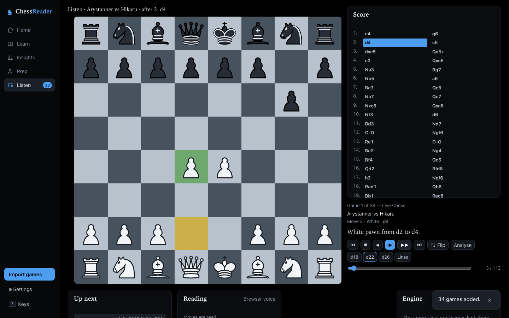
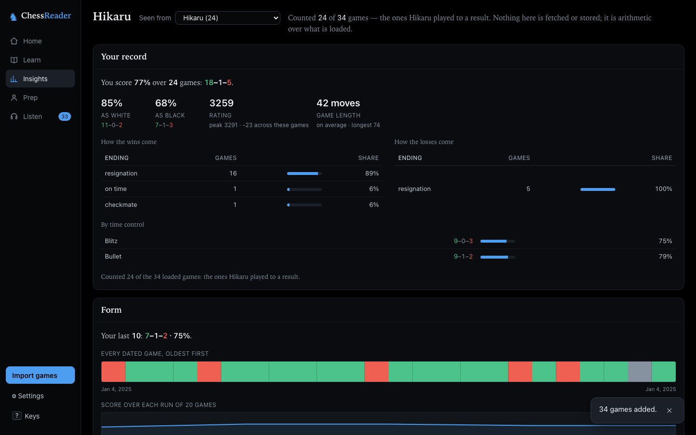

Listen
A player for games: a queue, transport controls, per-move scrubbing, repeat modes, and every move spoken at three verbosity levels — in the browser's own voice or one you configure.
Paste a PGN or pull your Chess.com or Lichess archive, and ChessReader works out what you got wrong, what you keep getting wrong, and what to do about it. Free, open source, and computed entirely in your browser — nothing is uploaded.
No account, no install. Desktop only: the app needs a window at least 1100 pixels wide.

A player for games: a queue, transport controls, per-move scrubbing, repeat modes, and every move spoken at three verbosity levels — in the browser's own voice or one you configure.
Stockfish runs in the page. Every move is judged, Brilliant down to Blunder, with accuracy for both players, the three moments the game turned on, and the opening named from a position table.
Your record, your form, your clock, your habits, two periods compared, the tree of what you actually play, and which of your lines keeps handing you positions you play badly. All arithmetic over your own games.
Twenty-three opening lessons, a repertoire book you author yourself, the missed-tactics collection, and drills over all of it on one spaced-repetition schedule.
Every position where a move cost you three pawns or more becomes a self-contained flashcard, filled by an archive sweep you start and can pause.
The people you are about to play: their public games, the same report Insights gives about you pointed at them, and your repertoire walked against theirs.

Your games are yours. Everything is computed on your machine. Games live in your browser's own storage, and nothing leaves it unless you point the app at a server of your own. There are no accounts, no tracking, and no one on the other end.
Free, and open. ChessReader is licensed under the GPL v3. The whole app is on GitHub: read it, run it on your own machine, change it, and send the changes back. If this site ever disappears, the app does not.
Bring your own infrastructure, or don't. Everything optional is a setting. Point the engine at a spare machine, plug in any OpenAI-compatible API for a natural voice and "why?" explanations, or sync between browsers through a small server you host. Every one of those falls back to the local default with one sentence, never an error.
Read, not scrolled. The app says what it found in sentences, not dashboards, and every finding sits behind a sample floor so a coincidence is never called a habit. Everything can be read aloud, and everything works from the keyboard.